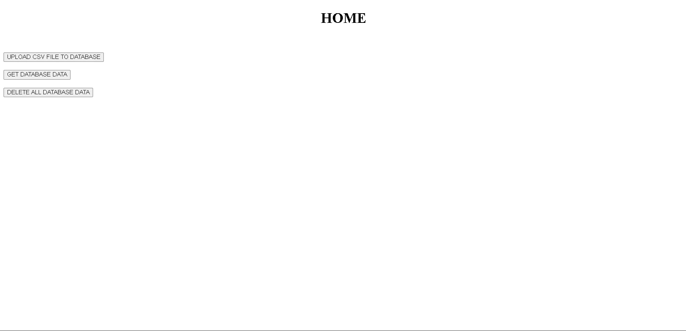
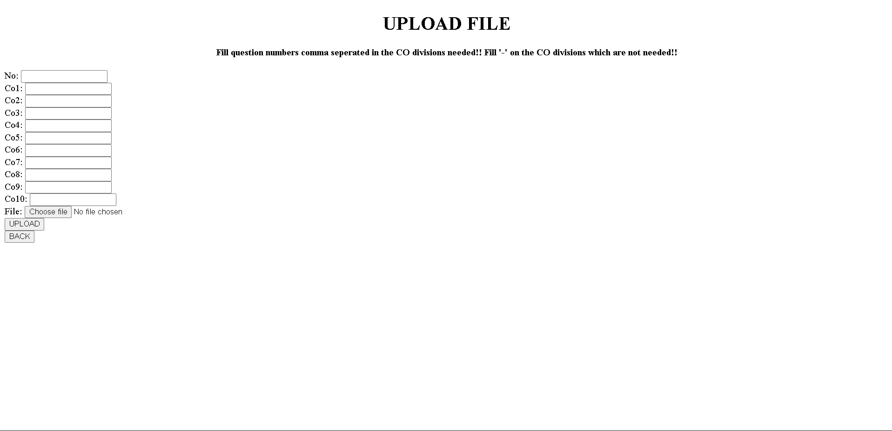
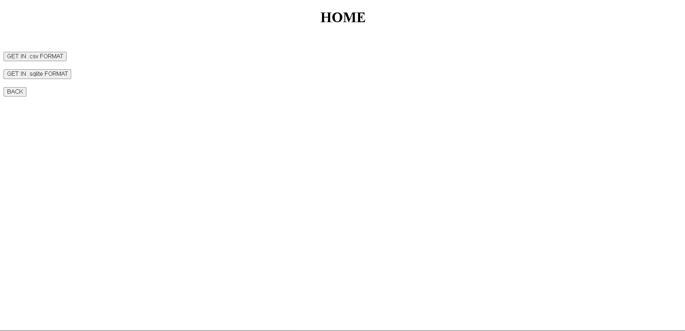

CollegeNov 2021 – Dec 2021
Student marks portal
A Django website a college professor asked me to build. It accepts his marks sheets, saves them in a database, and returns the whole database as CSV or SQLite.
- Stack
- Python · Django · CSV · SQL
- Built for
- A college professor
- Type
- Web app
screens
swipe or use the arrows


origin story
My uncle, a professor at a government college, kept student marks in Excel sheets and often lost track of them. I built him a tool that reads a CSV and stores the data the way he wanted.
what it does
- UploadA friendly interface accepts one or more CSV files. For each CO division you type the question numbers, comma separated, and put "-" on the divisions you do not need.
- StoreThe data is added to a database inside Django.
- DownloadWhen needed, the whole database comes back as a .csv or a .sqlite file.
- ClearOne button deletes all the data in the database.
Want to see the code?
The source is on GitHub.